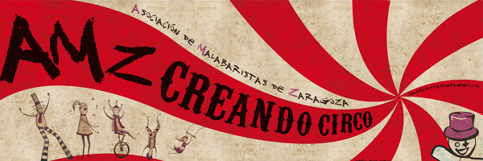
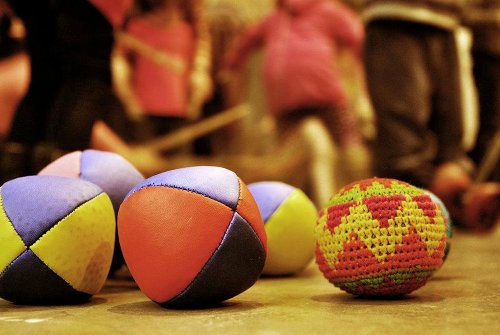
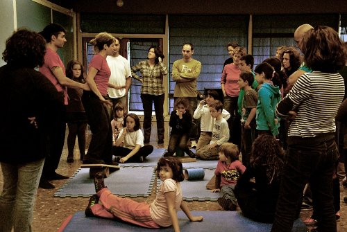

Talleres
Horarios
Sábado
Cariocas: Maik11-13:00 horas, Sala segunda planta
Curso de aéreos (todos los niveles): Yolanda Gutiérrez (Capicúa Circ) y Oriol Escursell
11-13:00 horas, Sala de entrenamiento general
Webs: Capicua, Suitcase Circus, Oriol en Vimeo
Swing de mazas (iniciación): Irene
11-12:00 horas, Sala tatami
Bastón de contact (simples o dobles, iniciación/medio): Bo
11-13:00 horas, Sala grande sin tatami
Mástil chino, Belu
13-15:00 horas, Zona de gala
Contact o malabares de contacto (Bola y bola acricila,iniciación): Pabuko
16:30-18:30 horas, Sala tatami segunda planta
Malabares: Jorge
16:30-18:30 horas, Espacio de entrenamiento/calentamiento
Cuerda floja (adaptable en función del alumnado): Irene
16:30-18:00 horas, Sala gala/exterior
Monociclo: Kostripunk
18-19:30 horas, Exterior
Clown (iniciación/intermedio): Toño Zarralanga
16:30-19:30 horas, Sala tatami
Web: Cia. Cirteani
Más talleres
Si alguna persona está interesada en impartir un taller, seminario, master class, etc. sobre alguna materia relacionada con el circo (o no), puede escribirnos a la dirección malabaristaszgz@gmail.com y se le asignará una hora y un espacio determinados además de un regalo que seguro será bien recibido. Animaros pronto ya que no hay tantas horas y lugares como quisiéramos.



{kind=link}
Vibrant by Adonis for Free Website Templates. Modified by Edu.
Design provided by Free Website Templates.